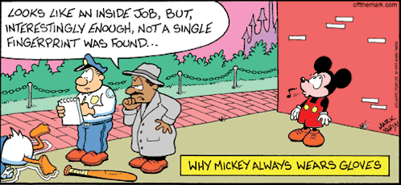

Biometrics refers to a wide array of technologies that rely on unique identifiable attributes of people for identification and authentication. These features, such as iris print, hand print, facial recognition, voice recognition, gait, or fingerprinting, can be used to authenticate individuals for access to computers and physical areas.
Biometrics as a field has existed for over a few decades but has entered the public sphere only recently. Many companies now employ biometrics to maintain security and time records, cellular technology has popularly picked up biometrics as a form of authentication. There isn’t a biometric module that is suitable for all implementations. Factors such as location, security vulnerabilities, tasks, user frequency, data sensitivity et cetera must be taken into account before implementing any one technique.

Since Biometrics is a rapidly growing field, its applications range from accessing computers to immigration security. One of the most popular modules of biometrics is fingerprinting and we will focus on that technique over the course of this project.
A. Jain, R. Bolle, and S. Pankanti in their 1999 paper titled, “Biometrics Personal Identification in Networked Society”, describe seven key factors that make finger printing a viable method of verification:
- Universality
- Uniqueness
- Permanence
- Measurability
- Performance
- Acceptability
- Circumvention